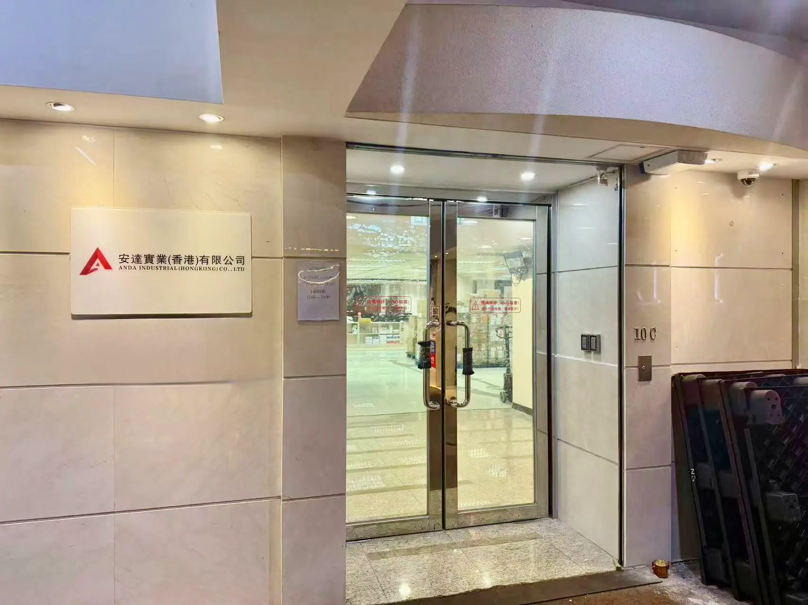
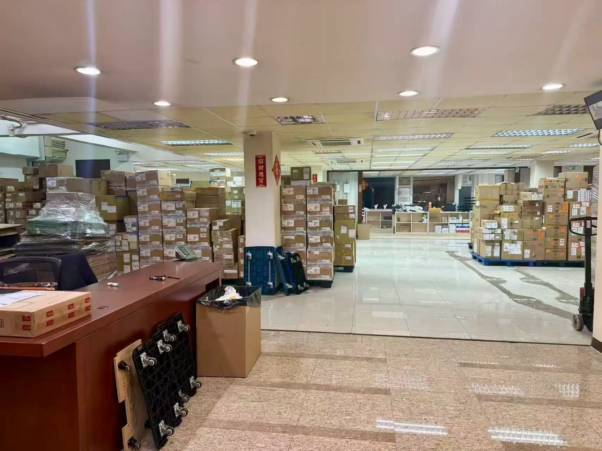
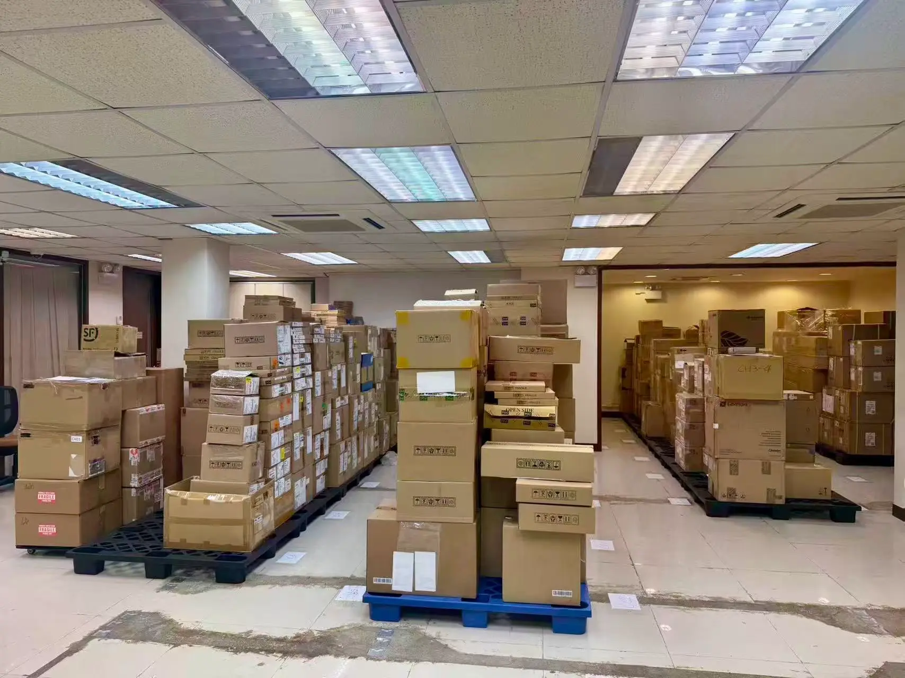
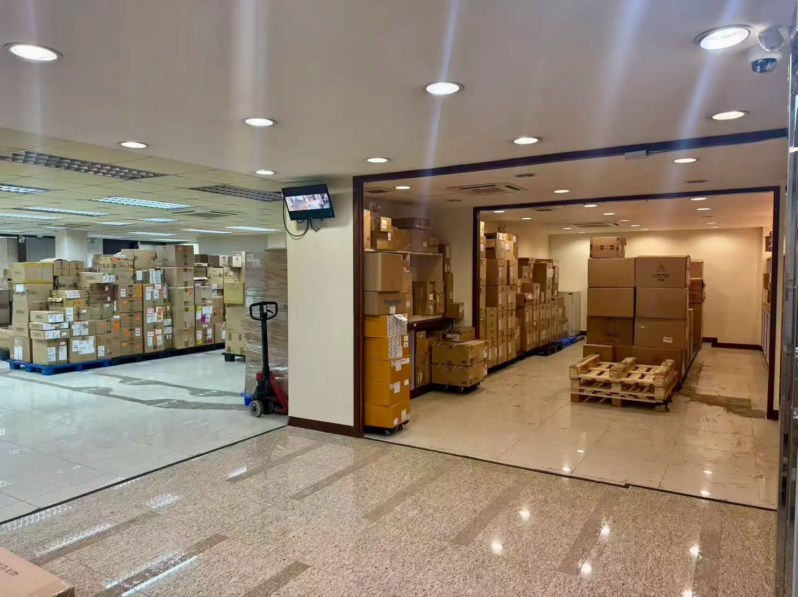
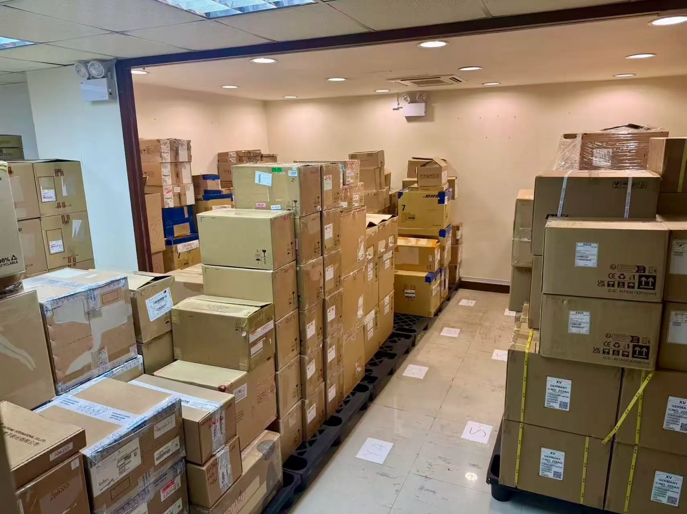
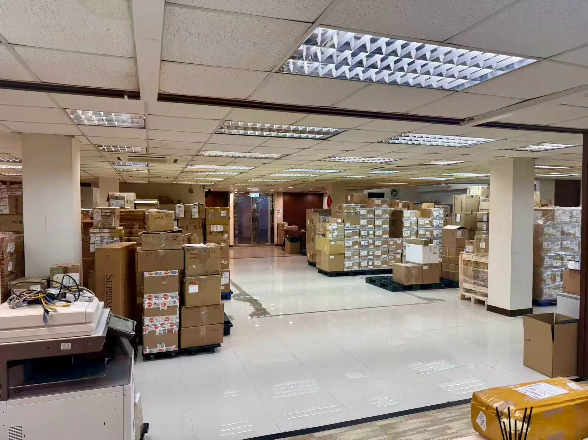
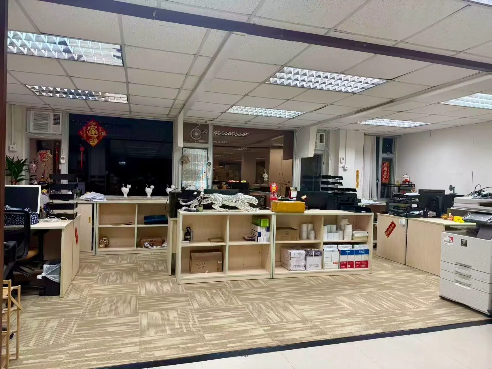
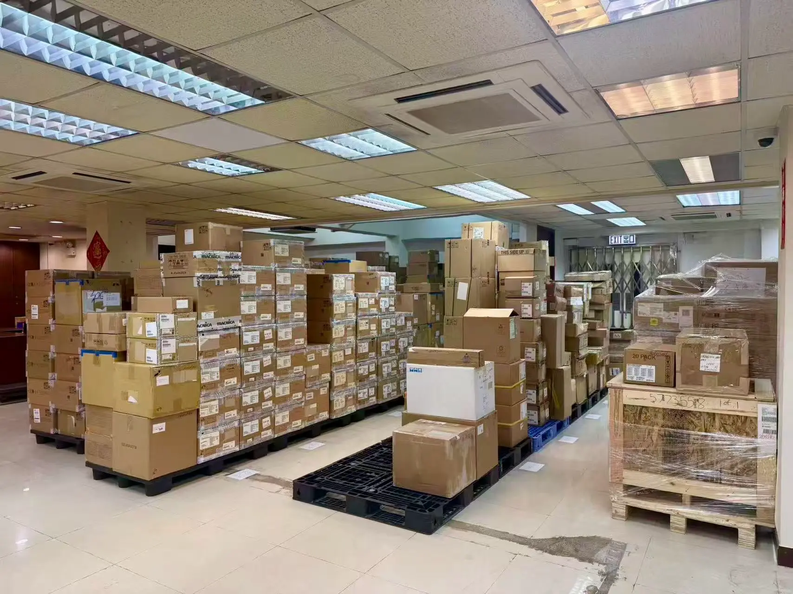
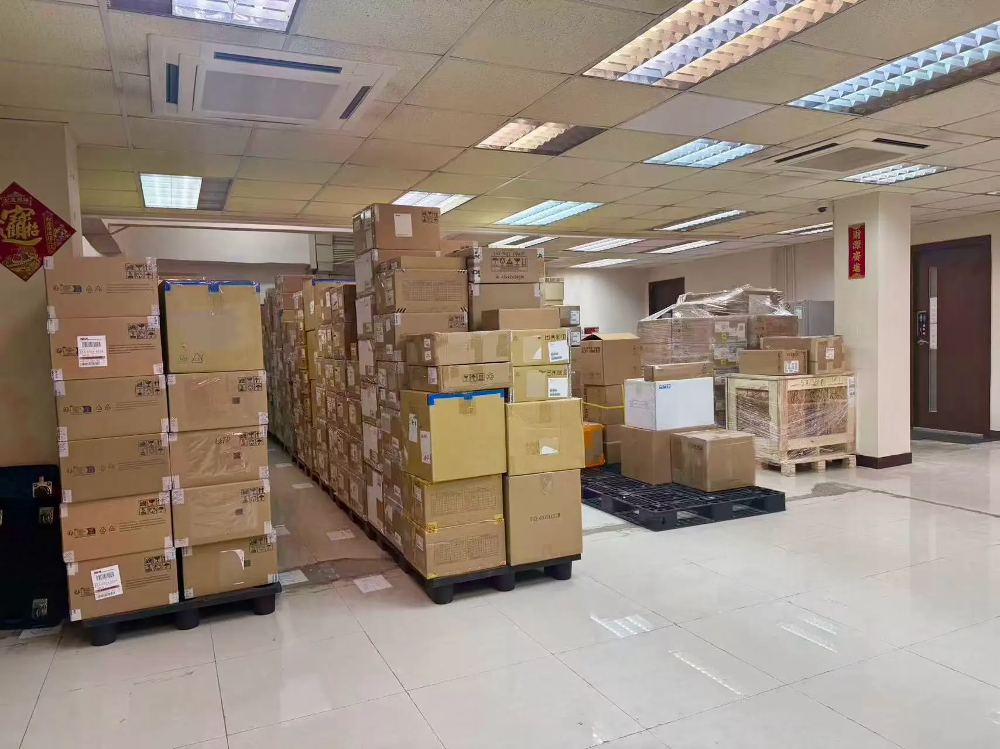

ANDA Logistics 是香港領先的電子元件物流服務商。我們擁有 16年+ 的行業經驗，專為半導體、PCB及精密電子組件提供從香港到全球的端到端運輸解決方案。
安達實業(香港)有限公司
我們專注電子零件倉儲管理與香港本地配送，提供安全收貨、分類存放、庫存協同及準時派送服務，助力客戶高效周轉。









圍繞電子零件流轉需求，提供從入倉、管理到本港派送的一站式支援。
按客戶、批次及品類分類存放，方便後續查找、出庫與配送安排。
協助核對來貨資料，整理箱件、標籤及包裝狀態，減少交收差錯。
配合客戶記錄入庫、出庫及餘量資訊，讓零件週轉更清晰可控。
按客戶要求處理外箱標籤、貨品識別及配送資料，方便快速派送。
覆蓋本港主要工商區及工廠客戶，支援小批量、多批次配送需求。
針對急件及指定時段交付需求，靈活安排人手與車輛銜接。
我們以清晰分類、妥善存放及快速出庫為核心，為電子零件客戶提供穩定可靠的倉儲與本港配送銜接。
專用車輛與包裝，確保敏感電子元件在運輸中免受靜電干擾，安全無憂。
針對特殊化學品及元件，提供恆溫及冷鏈運輸服務，符合國際標準。
依託香港國際樞紐優勢，提供極速空運及清關服務，縮短交付週期。
覆蓋全球主要電子產業基地，提供從工廠取貨到倉庫卸貨的一站式服務。
了解貨物特性、體積及時效要求。
根據電子元件類型定製專屬包裝與運輸方案。
專業團隊上門打包、驗貨並安全裝載。
實時GPS定位，全程可視化物流管理。
安全送達，簽收確認，提供售後支援。